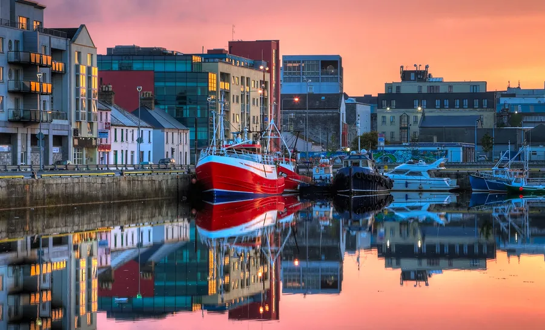

Galway is one of Ireland's most colourful cities. It is famous for music, festivals and beautiful coastal views.
Visitors enjoy street performances, seafood restaurants, historic streets, and Galway Bay.
